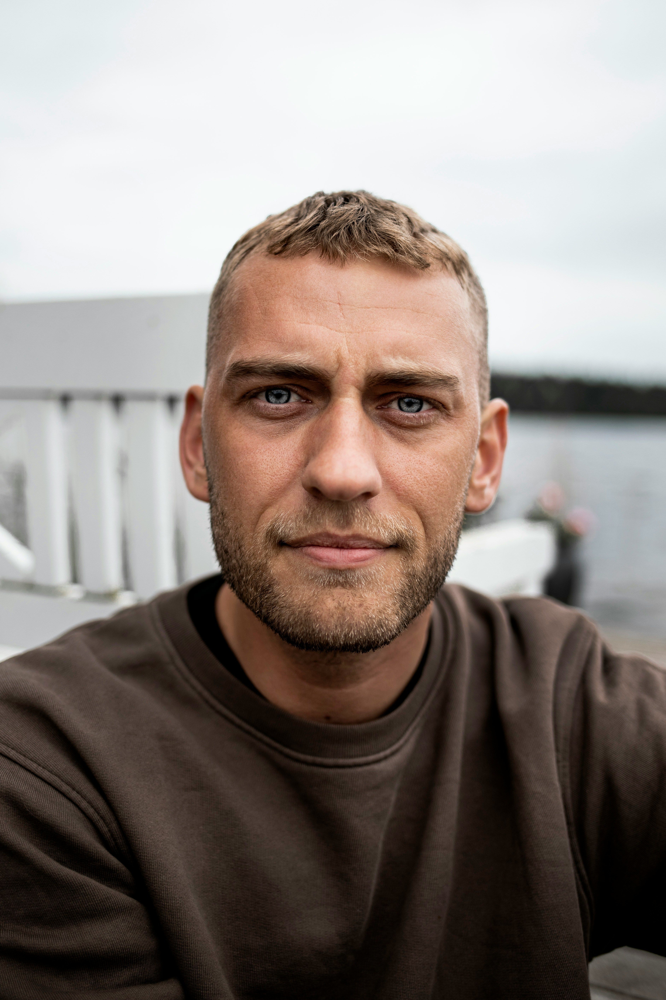

Nexus Retailing
Our Story
Nexus is a small upstart business which predominantly focuses on retail. We were first founded in 2019 by our Founders Precious Radebe and Learato Tleane.
We were founded on the ideology that fashion is a way of liberation, promoting and embracing the ability of self-identity as well as redefining the fashion scene in South Africa.
Our Founders, Precious and Lerato, seeing that they share the same vision of promoting youth empowerment through fashion.They both decided on a collaboration and formed our business, NEXUS.
We first started from a living room of a small home in the township of Soweto. Our Founders did not have enough capital to begin with but still managed to pull through with creating new designs and new clothes that made gain some popularity.
With the rolling stone set in motion, Nexus gained some traction but struggled during 2020 due to Covid-19 but later gained a massive following and traction mid 2021.
Ranging from promoting self-identity and empowering the youth, Nexus offers the youth a chance to participate in fashion shows as well as volunteering in local community projects.
We may be a small business but we have heart. As we are still growing we hope to achieve our goal of redefining the fashion scene.
Our Vision and Mission Statement
Our vision as Nexus is to reach the top of the Fashion Scene of South Africa by ecouraging our youth to embrace their own personalties and be free from all of their burdens and the leashes that hold them down.
We value the independence of our youth and it's our goal to help them break free from their cacoons that oppress them.
We aim to achieve unprecedented heights by leaving a mark, a mark that will stay alive as long as the youth plans to be free from all the stereotypes, free from all the expectations that hinder their true ppotential and help them to exude the highest level of confidence.
Our Members
| Members | Image of Member |
|---|---|
| Precious Radebe | |
| Lerato Tleane |  |